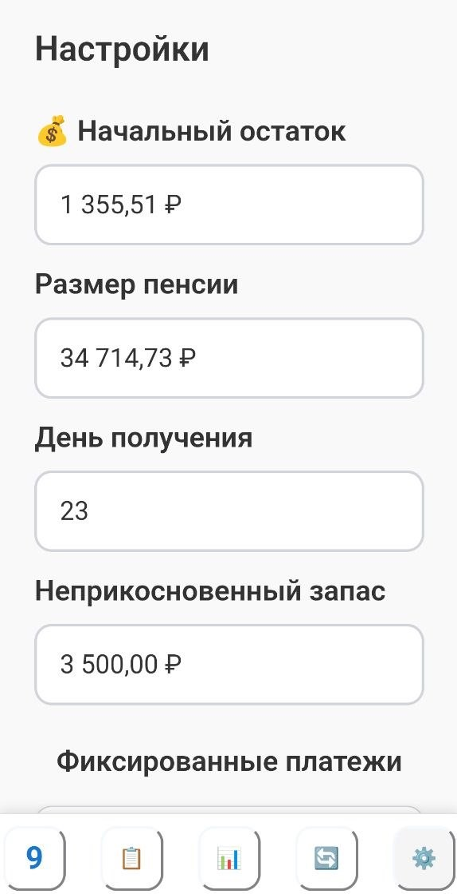
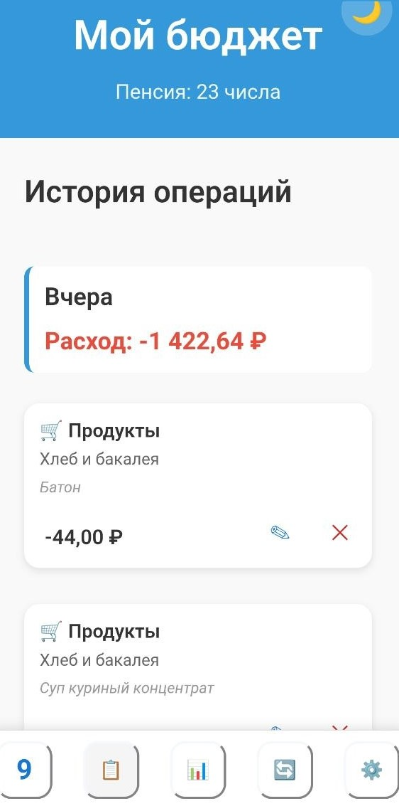
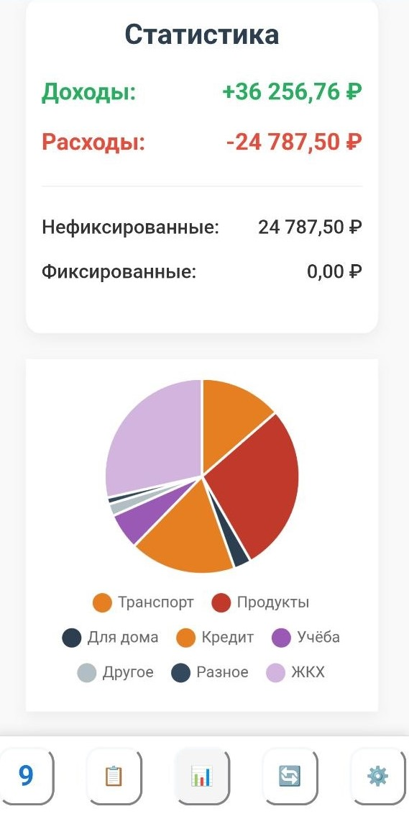
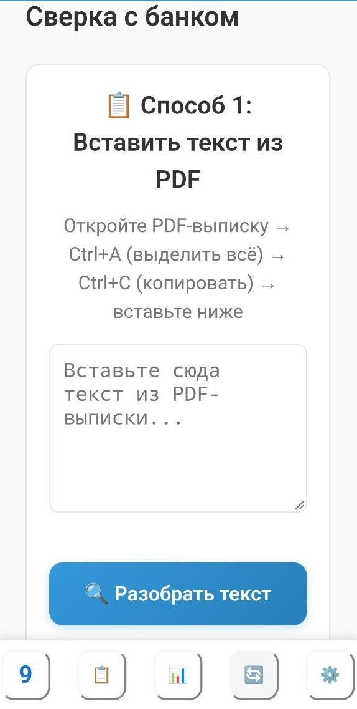

📘 Руководство пользователя
Актуально для версии 2.1
1. Начало работы
При первом запуске приложение предложит вам пройти краткую настройку. Если вы пропустили этот шаг, вы всегда
можете настроить всё вручную в разделе «Настройки».
💡 Совет: Для корректного расчёта дневного лимита важно указать реалистичную
сумму неприкосновенного запаса (НЗ). Эти деньги приложение будет автоматически резервировать и не включит их
в доступный для трат остаток.
2. Настройка приложения
Перейдите на вкладку «Настройки» (шестерёнка внизу экрана):

Рис. 1. Экран настроек с управлением счетами
- Источник дохода: Выберите «Пенсия», «Зарплата», «Стипендия» или «Свой вариант». Для
регулярных доходов появится поле «День получения».
- Сумма поступления и день: Укажите размер дохода и число месяца, когда он приходит.
- Неприкосновенный запас (НЗ): Сумма, которая всегда должна оставаться на счету на
экстренный случай.
- Управление счетами (Многоконточность): Нажмите «+ Добавить счёт». Приложение
автоматически распознает популярные банки (Сбербанк 🏦, Тинькофф 🏦, ВТБ 🏦) и подставит им фирменные
цвета.
- Обязательные платежи: Добавьте регулярные траты (ЖКХ, интернет, кредиты) с указанием
суммы и дня месяца.
3. Главный экран и начало периода
На главном экране вы видите ваш дневной лимит и цветовой индикатор:
📸 Скриншот: Главный экран (будет добавлен)
Здесь будет скриншот актуальной версии главного экрана с кнопкой "Поступление: Пенсия"
- 🟢 Зелёный: Вы тратите в пределах безопасного лимита.
- 🟡 Жёлтый: Внимание, темп расходов выше рекомендуемого.
- 🔴 Красный: Осторожно, свободный бюджет на исходе.
💡 Важно: Когда вы фактически получите деньги, нажмите кнопку «✅
Поступление: [Доход]». Это запустит текущий период и перенесёт нераспределённый остаток с
прошлого месяца.
4. Учёт операций
📝 Запись расхода
Нажмите «+ Расход». Выберите категорию, а затем подкатегорию.
📸 Скриншот: Модалка расхода с цветным кружком (будет добавлен)
Здесь будет скриншот модалки добавления расхода с цветным индикатором подкатегории
🎨 Цветные индикаторы (новая функция v2.1): При выборе подкатегории (например,
«Мясо» или «Овощи») справа от списка появится маленький цветной кружок. Эти же кружки отображаются в истории
операций, позволяя мгновенно считывать структуру трат.
Вы также можете указать Предмет покупки (например, "Молоко") и Место (например,
"Пятёрочка"), а также выбрать конкретный счёт, с которого была произведена оплата.
💰 Запись дохода и Переводы
- Доход: Используйте для любых дополнительных поступлений (подработка, возврат долга,
подарки).
- Перевод: Используйте для перемещения денег между вашими счетами. Переводы не
считаются ни доходом, ни расходом и не влияют на общий дневной лимит.
5. История операций
Во вкладке «История» все операции сгруппированы по дням. Вы можете редактировать или удалять
любую запись.

Рис. 2. История операций с группировкой по дням
6. Статистика и сверка
📊 Статистика
Во вкладке «Статистика» вы увидите круговую диаграмму расходов по категориям и детализацию
по подкатегориям.

Рис. 3. Круговая диаграмма расходов
🔄 Сверка с банком
Функция сверки помогает сопоставить ваши записи с выпиской из банка. Алгоритм автоматически находит
совпадения и помечает расхождения.

Рис. 4. Экран сверки операций с банковской выпиской
7. Архивация периодов
Когда старый период закончился и вы хотите начать новый с чистого листа:
- Зайдите в «Настройки».
- Нажмите кнопку «🔒 Закрыть период и создать архив».
- Подтвердите действие. Приложение сохранит полную историю, перенесёт остаток и очистит текущий список
операций.
📸 Скриншот: Раздел архивов (будет добавлен)
Здесь будет скриншот раздела архивов в настройках
Просматривать закрытые периоды можно в разделе «Архивы» внизу страницы настроек.
8. Резервное копирование
Все данные хранятся локально в вашем браузере. Чтобы не потерять их:
- Регулярно нажимайте «Экспорт данных» в настройках.
- Для восстановления нажмите «Импорт данных» и выберите сохранённый файл.
9. Дополнительные возможности
- 🌙 Тёмная тема: Переключается кнопкой в правом верхнем углу главного экрана.
- 📱 Установка на телефон: В браузере Chrome/Safari нажмите «Поделиться» → «На экран
"Домой"». Приложение будет работать как нативное, даже без интернета (PWA).
← Вернуться в приложение